SOA 11c
Instalación
Click Plug-Ins > Install > SOA 11g
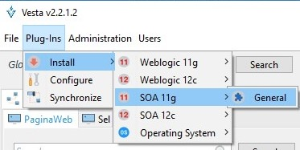
En la siguiente pantalla se deberá seleccionar el plug-in a instalar, se solicitará una serie de archivos y directorios requeridos por el plug-in. Para el caso de los plug-ins de SOA 11g o bien SOA 12c, los siguientes datos serán solicitados:
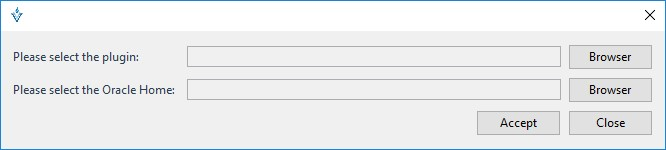
Browser Este botón permite seleccionar el archivo .zip que contiene los binarios de instalación.
Browser Este botón permite seleccionar el directorio ORACLE_HOME de una instalación local de WebLogic 11c con Oracle SOA Suite 11g
Al finalizar el proceso de instalación, la aplicación deberá ser reiniciada.
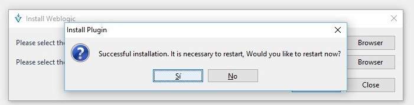
Configuración de Plug-in “SOA 11g”
Para utilizar el plugin se requiere utilizar la opción “Configure” del menú Plug-ins
Click Plug-Ins > Configure
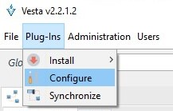
En la siguiente pantalla se deberá seleccionar la “aplicación y ambiente” al cual estará asociado el Plug-in “SOA 11g”. Es importante conocer que una misma “aplicación y ambiente” pueden estar asociados a múltiples plugins.
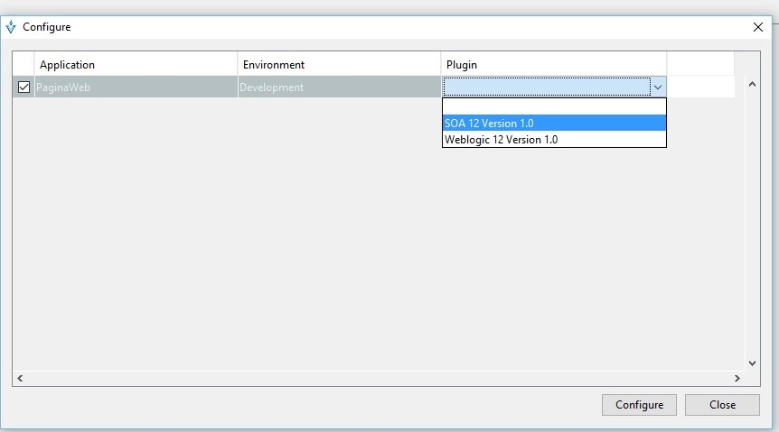
En la siguiente pantalla se deberán ingresar los datos de conexión al servidor de dominio “SOA”.
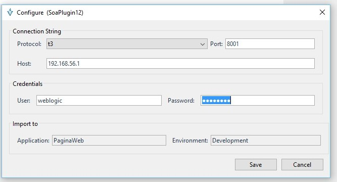
Servidor: IP en donde recibe peticiones el servidor de dominio SOA.
Puerto: Donde recibe peticiones el servidor de dominio SOA (Cualquier MS).
Usuario: Usuario de conexión, este deberá pertenecer al grupo de dominio WebLogic, “Administrators”.
Password: Contraseña del usuario de conexión.
El proceso de conexión al servidor es iniciado
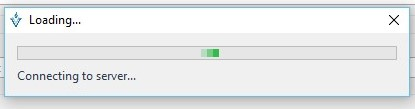
Recuperación de la configuración “SOA”
La siguiente pantalla muestra las diferentes categorías con las cuales dispone el plug-in “SOA”:

soaProperties Contiene las entradas de configuración comunes del motor de procesamiento SOA.

Select All Este botón selecciona todas las propiedades del componente de configuración seleccionado.
Select Suggested Este botón selecciona las propiedades del componente de configuración sugeridas por el sistema.
Nota: Las propiedades sugeridas por el sistema indican los campos necesarios para el proceso de aprovisionamiento de la configuración en el servidor de dominio “SOA”
Unselect All Este botón deselecciona todas las propiedades del componente de configuración seleccionado.
composite Properties Contiene los ítems de configuración asociados a los servicios SOA.
La siguiente pantalla muestra los diferentes servicios de dominio SOA, estos servicios son agrupados por categorías según la partición a la que pertenecen.
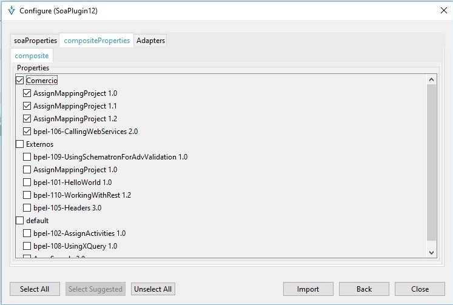
El proceso de descarga es iniciado.
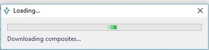
Adapters
Contiene las entradas de configuración asociados a los JCA Adapters.
La siguiente pantalla muestra los diferentes JCA Adapters disponibles en el servidor de dominio “SOA”. Aquellos JCA Adapters que cuenten con una configuración activa podrán ser seleccionados.
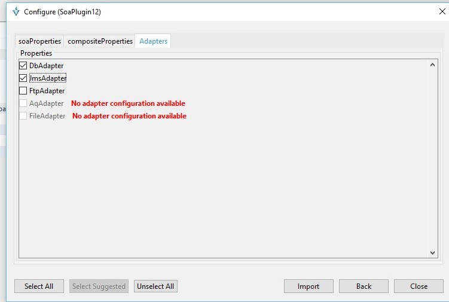
Listar entradas “SOA”
La siguiente pantalla permite visualizar las entradas de configuración provenientes de un plug-in, estas entradas son identificados mediante iconos de color “azul”.
Click File > Entries
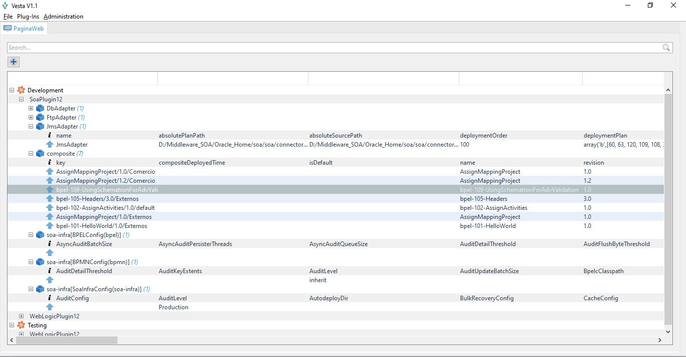
Composite properties
La siguiente pantalla permite visualizar los diferentes servicios de SOA descargados desde el servidor de dominio “SOA”, los elementos más relevantes se enlistan a continuación:
Properties: Propiedades del servicio SOA.
Imports: Importación de recursos (XSD,WSDL).
References: Referencias a servicios externos.
Services: Referencias a servicios externos.
Components: Componentes que integran un servicio SOA.
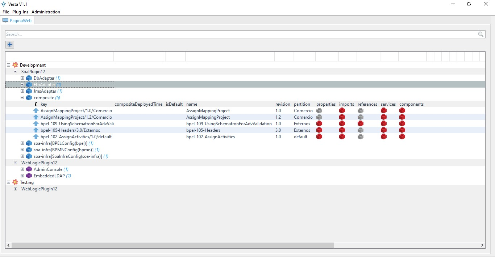
Opciones sobre entradas
Opciones generales
Las siguientes opciones se encuentran descritas en la sección Configuración inicial > Opciones sobre entradas>
- View entry
- Edit entry
- Duplicate entry
- Promote entry
- Delete entry
- View children
- View History
- Tree History
- Copy Selection
- Copy property
- Compare